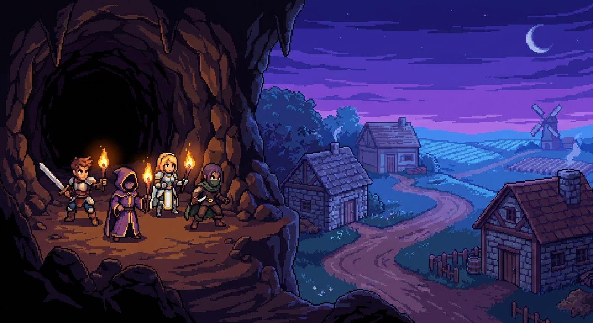

monster-collect
포켓몬 같은 몬스터 수집
포획 · 도감 · 야생 조우
Notion 정본은 7개 레퍼런스 게임이었습니다. 현재 웰컴 화면은 그중/주변을 제품화해 4개 장르 칩으로 압축한 상태입니다. 아래는 2026-07-08 로드맵 + 2026-07-09 성적표 + 2026-07-15 런타임 상태를 합친 매트릭스입니다.
코드 정본: src/editor/welcomeGenrePresets.ts. 칩은 “완성 게임 클론”이 아니라 시작 뼈대 템플릿입니다.
포획 · 도감 · 야생 조우

육성 · 진화 · 유대

농장 · 일상 · 마을

파티 · 던전 · 모험
페이지: 2026-07-08 고도화 로드맵 — 7개 목표 게임 12 Phase. 목표 한 줄: 아래 7종을 내부 에이전트가 자연어 지시만으로 제작 가능한 수준.
script_cutscene·컷신 락·엔딩 그래프 있음“구현 가능”을 세 층으로 나눕니다. 엔진 런타임, 에이전트 원큐 제작, 플레이어가 느끼는 완성도.
| 게임 | 엔진 런타임 | 에이전트 원큐 2026-07-09 |
10분 수직 슬라이스 | 이미 있는 핵심 슬롯 | 아직 약하거나 비목표 |
|---|---|---|---|---|---|
| 포켓몬 | 강함 | 완주 | 가능 | 수집/포획/타입/진화/몬스터 파티/포켓몬 전투 UI | 교환 서버, 도감 UX 풀셋, 애니메이션 연출 밀도 |
| 스타듀 밸리 | 강함 | 완주 | 가능 | 시간/계절, 농사, 호감/선물, 스케줄, 상점 시즌 | 결혼/동거, 페스티벌 풀 시뮬, 동물 목장 풀셋 |
| 영웅서기 제로 | 강함 | 완주 | 가능 | strict 전투, 보스 페이지, 승급, 인카운터, 던전 | 장편 밸런스, 액션패턴 저작 편의, 콘텐츠 양 |
| 바람의 나라 | 중상 | 부분 | 부분 가능 | 승급, 사냥터 스폰, 생활 루프, worldGraph, export | 대규모 월드 품질, 승급 NPC 원큐 안정, MMO성 |
| 투더문 | 중상 | 부분 | 가능(품질 편차) | script_cutscene, 카메라/픽처, 엔딩 그래프 | 연출 타이밍 미학, 계획 단계 툴 순서 마찰 |
| 마녀의 집 | 중상 | 부분 | 가능(맵 품질↓) | checkpoint, killPlayer, chase, lighting, weather | 실내 벽/9-slice, 방 밀도 자동 배치 |
| 이브 | 중 | 0건 | 수동 저작 가능 | 조사 핫스팟, 퍼즐 컴파일, 동행, 추격 | 원큐 오케스트레이션, 갤러리 맵 자동 밀도 |
로드맵 원칙: 각 phase는 대상 게임 1개의 “플레이 가능한 10분 수직 슬라이스”로 검증. A 연출 / B 전투 / C 생활 트랙 병렬 가능.
카메라, spawn/remove, scene test — 전 게임 공통 바닥
script_cutscene, 픽처/오디오 동기, 컷신 락
트랩, 리트라이, ending graph
examine hotspots, puzzle DSL
follower, A* chase, safe zones
lighting, weather, map animation
strict 턴, 교체, 보스 이벤트
승급, 보상 정책, 필드 스폰
species/instance, capture, evolution, typeChart
GameTime, farmPlots, crops
스케줄, friendship, 계절 상점
worldGraph, web player bundle, (Tauri 후속)
자연어 원큐, 후속 지시 없음, M8 배포본 기준. 총평: DB/시스템형은 강하고, 공간+이벤트 복합(실내 공포)이 가장 어려움.
| 포켓몬 | 완주 84s | 종 3 + 타입 + 스타터 + 진화 |
| 스타듀 | 완주 175s | 밭 + 농가 내부 + 농부 |
| 영웅서기 | 완주 180s | strict + 보스 페이지 + 맵 스펙 |
| 바람의 나라 | 부분 173s | 사냥터 지형 OK · 승급 NPC 미완 |
| 투더문 | 부분 150s | 컷신 OK · NPC 순서 꼬임 |
| 마녀의 집 | 부분 534s | 루프 도달 · 외벽 품질↓ |
| 이브 | 0건 104s | 설명만 종료 · 재킥 미발화 |
사용자가 지금 에디터에서 “어떤 문”으로 들어갈 수 있는지.
| 칩 | 직접 대응 | 간접 대응 |
|---|---|---|
| 포켓몬 같은 몬스터 수집 | 포켓몬 | 바람(사냥) 일부 |
| 디지몬 같은 파트너 육성 | (7종 외 인접축) | 포켓몬 케어/진화/유대 |
| 스타듀 같은 농장 생활 | 스타듀 밸리 | 바람 생활 루프 |
| 모험 JRPG | 영웅서기 제로 | 바람 성장/던전 |
칩에 없는 목표: 투더문 · 이브 · 마녀의 집 — 자유 입력 또는 전문가 툴로 진입.
예전에 목표로 박은 건 장르 4개가 아니라 레퍼런스 게임 7개였습니다. 그중 포켓몬·스타듀·영웅서기 축은 엔진과 잘 맞고, 호러/연출 축은 “가능은 한데 자동 생성이 약하고”, 바람은 “뼈대는 있는데 스케일 연결”이 남은 일입니다.